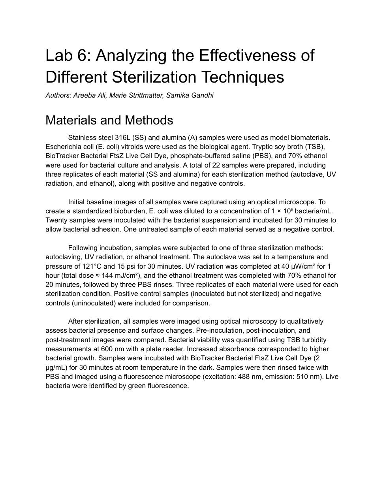
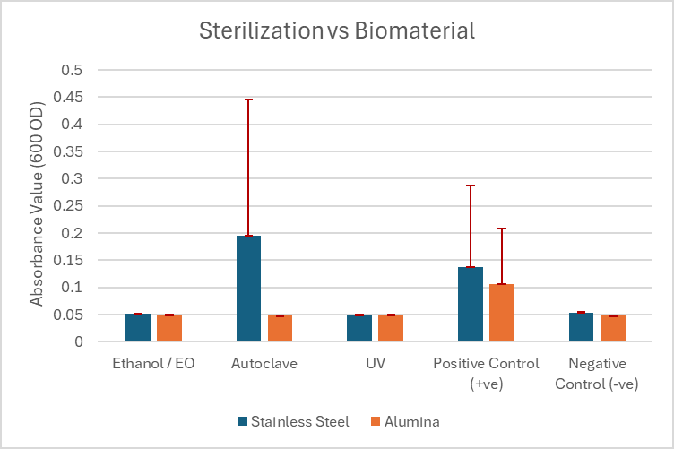
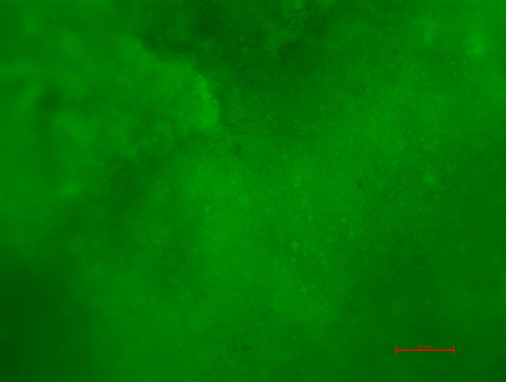
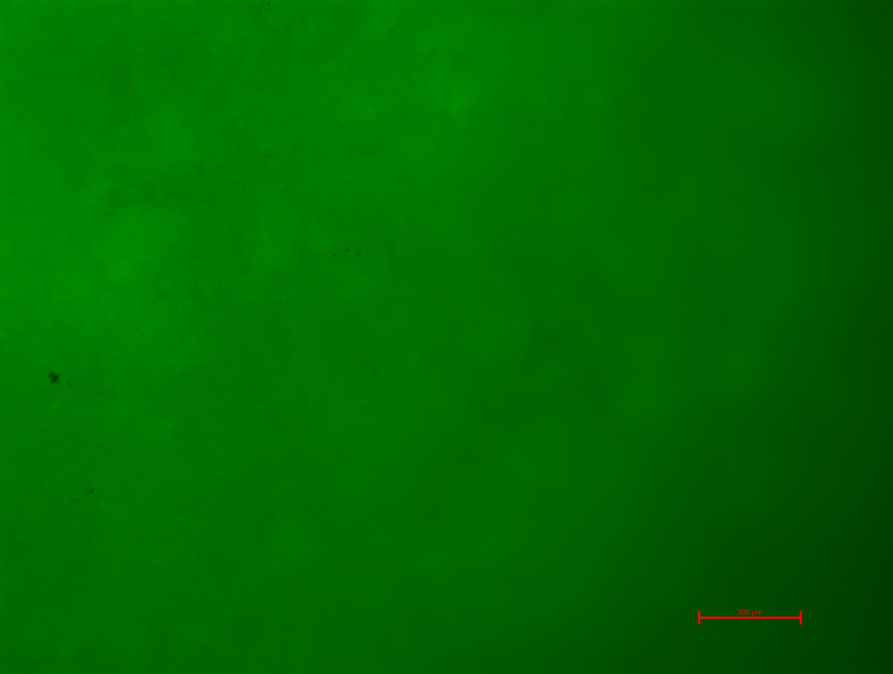
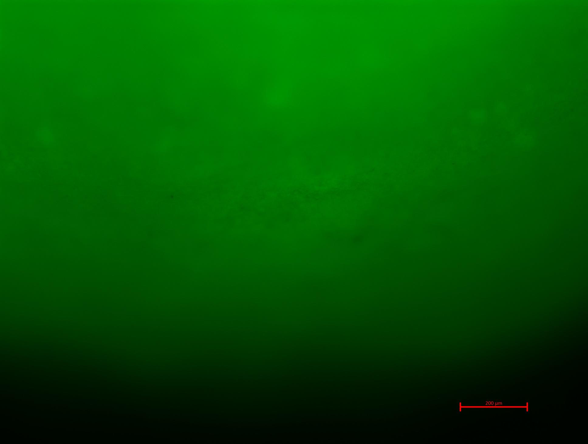

Team: Areeba Ali, Marie Strittmatter, and Samika Gandhi.
Explore the original five-page report, including the experimental protocol, microscopy images, statistical comparisons, discussion, and references.

Evaluate the relative effectiveness of autoclaving, UV radiation, and ethanol treatment at reducing viable E. coli on stainless steel 316L and alumina. Compare treatments using qualitative surface imaging and quantitative absorbance measurements, and examine whether the material influences the observed response.
Selecting a sterilization method for a biomaterial requires evidence that the treatment reduces viable contamination on the relevant surface. This experiment compared three treatment conditions across two model biomaterials rather than assuming that one approach would perform equally well on both.
A meaningful comparison also depends on the controls: inoculated, untreated samples must demonstrate bacterial growth, while uninoculated samples establish the background signal. Without that separation, a low post-treatment signal cannot establish whether bacteria were removed or whether sufficient contamination was ever present.
The report describes 22 samples: three replicates for each of two materials under each of three treatments (18 treated samples), plus one inoculated positive control and one uninoculated negative control per material (four controls).
Captured baseline optical images. Prepared E. coli at a target concentration of 1 × 10⁶ bacteria/mL, inoculated 20 samples, and allowed 30 minutes for adhesion. One uninoculated sample of each material served as a negative control.
Autoclave: 121°C at 15 psi for 30 minutes. UV: 40 μW/cm² for 1 hour, approximately 144 mJ/cm² total dose. Ethanol: 70% for 20 minutes, followed by three PBS rinses. Inoculated, untreated samples served as positive controls.
Compared pre-inoculation, post-inoculation, and post-treatment optical images. Measured TSB turbidity as absorbance at 600 nm. For fluorescence imaging, incubated samples with 2 μg/mL BioTracker Bacterial FtsZ Live Cell Dye for 30 minutes in the dark, rinsed twice with PBS, and imaged at 488 nm excitation and 510 nm emission.
The report used two-sample t-tests assuming equal variances, with a significance threshold of p < 0.05. None of the reported comparisons reached statistical significance. These are the comparisons reported in the lab report; they do not establish that the three treatments are equivalent.
| Comparison | p-value | Significant at p < 0.05? |
|---|---|---|
| Alumina vs. stainless steel | 0.313 | No |
| UV vs. positive control | 0.154 | No |
| UV vs. negative control | 0.409 | No |
| Ethanol vs. positive control | 0.158 | No |
| Ethanol vs. negative control | 0.773 | No |
| Autoclave vs. positive control | 0.154 | No |
| Autoclave vs. negative control | 0.415 | No |

Fluorescence images of alumina from the Wednesday lab group were also reviewed. The report describes small differences in cloudiness, speckling, and contrast, but does not interpret these as evidence of different bacterial presence or sterilization effectiveness.
The study was inconclusive. Positive controls did not show the expected high absorbance or visible turbidity, indicating insufficient or inconsistent bacterial loading. As a result, the experiment could not reliably rank the sterilization methods or establish their effectiveness on either material.



Key takeaway: No statistically significant difference is not evidence of equal sterilization performance. The positive-control signal must first demonstrate a viable bacterial challenge.
The report identifies possible contributors including an overly diluted bacterial preparation, handling variability, and a shortened culture period of 24 hours rather than the planned 48 hours. These were proposed explanations, not confirmed causes.
A follow-up study should first verify bacterial growth and control separation, then repeat the treatment comparison with consistent sample handling and sufficient culture time. The report also proposes surface cleaning to reduce interference, particularly before UV exposure; that additional step would need to be defined and evaluated separately.